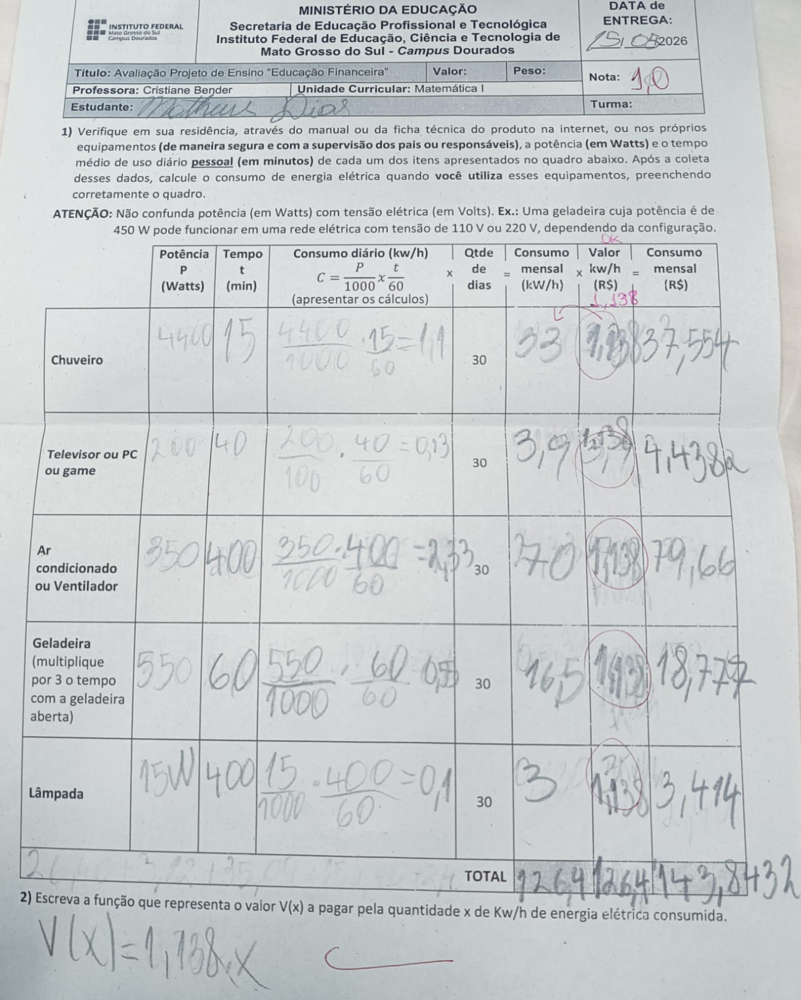
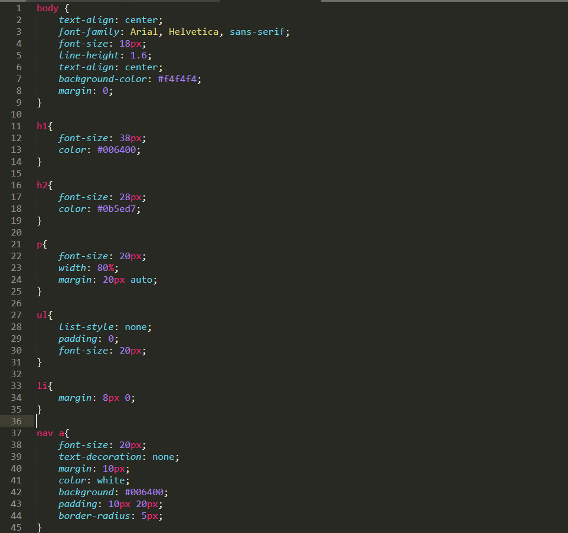
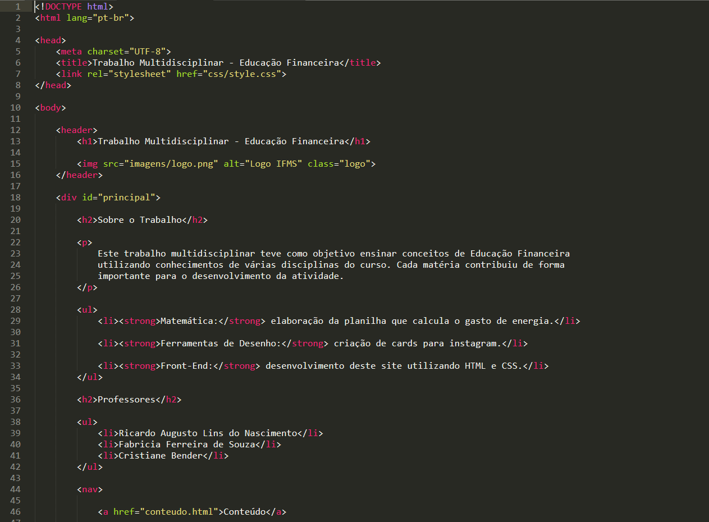

Nesta atividade foi realizada uma análise do consumo de energia elétrica de nossa casa, de diferentes equipamentos utilizados no dia a dia, como chuveiro, televisão, ar-condicionado, geladeira e lâmpada

As imagens abaixo apresentam as telas desenvolvidas para o projeto de Educação Financeira. O site foi criado utilizando HTML e CSS, com o objetivo de organizar e apresentar os conteúdos do trabalho multidisciplinar de forma clara, responsiva e de fácil navegação.

